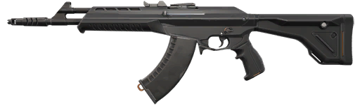
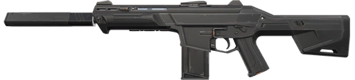
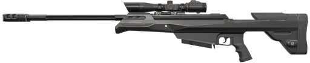

Оружие
Оружие выбирают под запас денег и предполагаемую дистанцию боя. Здесь сравниваются две винтовки для обычного закупочного раунда и снайперская винтовка для удержания длинных линий.
|
 |
VandalАвтоматическая винтовка для точных коротких очередей. Подходит для удержания дальних углов, но при длительной стрельбе становится сложнее контролировать отдачу. Между очередями полезно делать паузу и возвращать прицел на цель. |
|
 |
PhantomАвтоматическая винтовка с глушителем. Удобна для ближних и средних дистанций и стрельбы через дым. При выборе позиции нужно учитывать дистанцию: в отличие от Vandal, её урон снижается на расстоянии. |
|
 |
OperatorСнайперская винтовка для удержания длинных линий. Позволяет наказать противника за выход на открытое пространство, но стоит дорого и медленно стреляет. После промаха особенно важно иметь укрытие или поддержку союзника. |
На изображениях показаны стандартные модели без скинов: так проще сравнить внешний вид оружия и узнать его в игре.
Перед покупкой
- Согласуйте закупку с командой: иногда выгоднее сохранить деньги на следующий раунд.
- Оставьте средства на броню и способности, которые нужны для выхода или защиты.
- Выбирайте позицию под оружие: длинная линия удобна для Operator, тесный проход требует другой манеры игры.
Изображения оружия: Riot Games. Официальный арсенал.